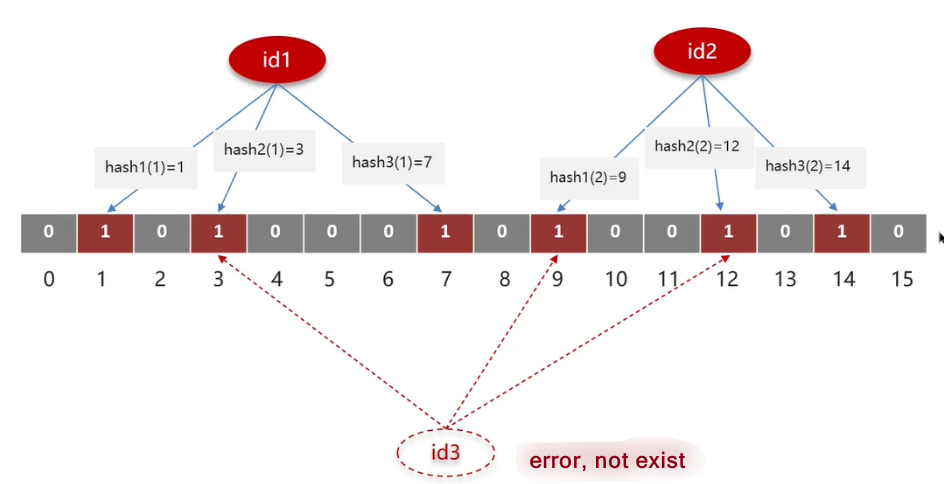

Redis
This blog post shows what kind of strategy and data structure MySQL has used to search data as fast as posible.
Redis Structure

Application Scenarios
Caching
Cache Penetration
Defination: query the data does not exist
Solutions:
- store null--> bigger consuming cache
- use Bloom Filter:

Cache Breakdown
Defination: when the key expired, simultaneously many users query the corresponding data and make database breakdown.
Solutions:
- Mutex Lock:When one thread want the expired data, then this thread will get the lock first, when it finds the data expired, it will try to query database and reset the expire time, during this time, the other thread who also wants to get the expired data but fails, and it will sleep for a while and try again later.
- use Logic Expire :
When the thread asks for an expired data,the thread will firstly return the expired data and the start a new thread to query the database, reconstruct the cache and reset logic expire.
Cache Avalanche
Defination: many keys expire at the same time, lead to many times visitings to DB, making DB breakdown.
Solutions:
- Mutex Lock:When one thread want the expired data, then this thread will get the lock first, when it finds the data expired, it will try to query database and reset the expire time, during this time, the other thread who also wants to get the expired data but fails, and it will sleep for a while and try again later.
- use Logic Expire :
When the thread asks for an expired data,the thread will firstly return the expired data and the start a new thread to query the database, reconstruct the cache and reset logic expire.
:
Write-Through/Write-Back Consistency: when update a data record that simultaneously in the database and int the Redis, how to avoid making the data dirty. There are two ways, one is to use distributed lock with the features of high consistency and low performnce. The another is RabbitMQ, allowing delay in a short time.
Data Persistence: there are two ways to persist the data. One is using RDB(redis database backup), means write all the data in Redis to the disk, when the Redis restart, it can quicly read the snapshot from the disk.The another is AOF, means store the command line of writing data,like log. The latter is more data-compeleted